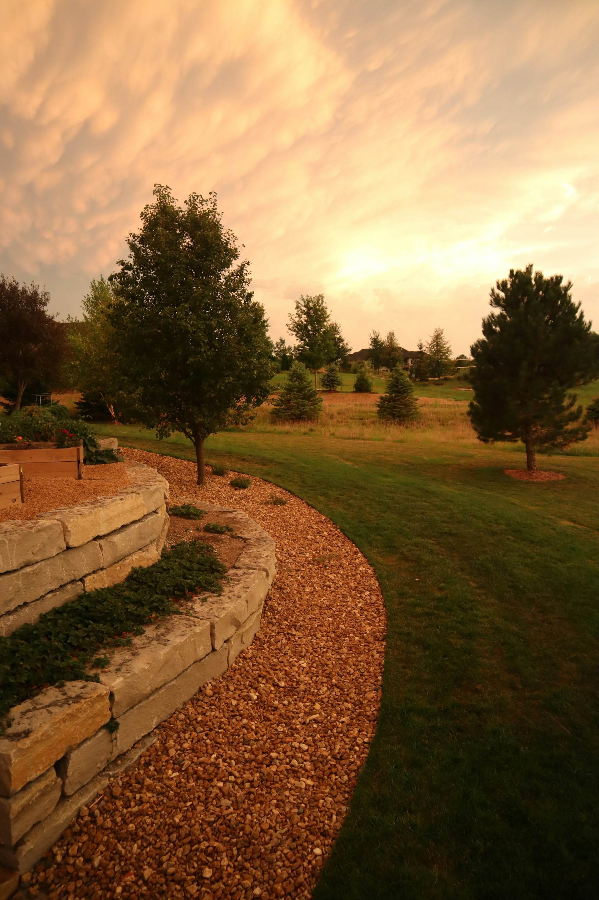

Project Gallery
Every yard tells a story. Here are a few examples of how we’ve helped homeowners across Utah achieve lush, well‑kept lawns and inviting outdoor spaces.



Every yard tells a story. Here are a few examples of how we’ve helped homeowners across Utah achieve lush, well‑kept lawns and inviting outdoor spaces.